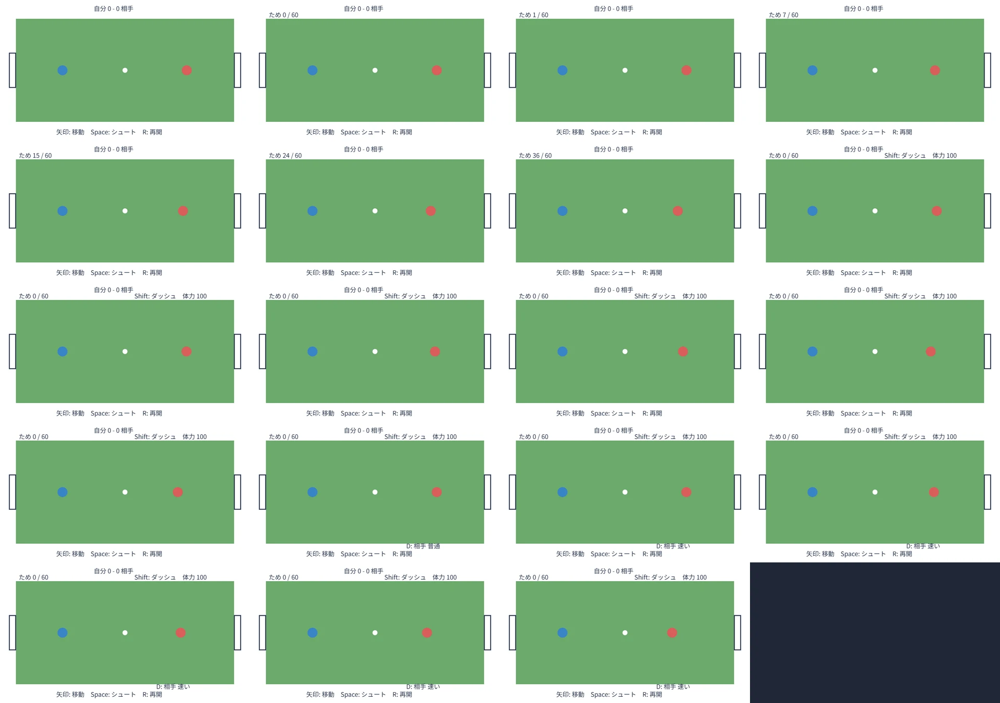
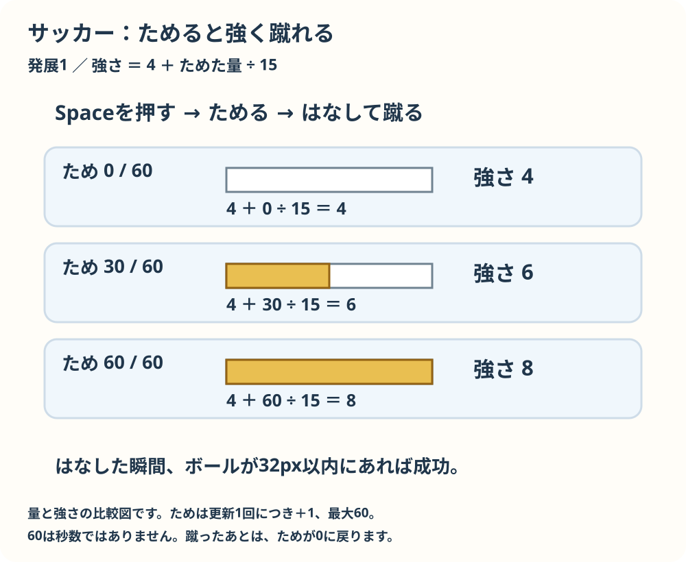

1対1サッカーの発展
始める前に
基本編の完成版から始めます。ZIPを展開してできたフォルダーでindex.htmlを開きます。ZIPには基本編の3ファイルが入っています。
WindowsでZIPを展開する（動画）
各段階の変更を上から順に加え、保存したら index.html を開くか再読み込みします。
ステップ 1：ためてシュート
このステップの見本を図で見る

このステップの見本
if (key === " " && !event.repeat && game.state === "playing") game.kick(game.player, 6);
変わったコードの一例（script.js）if (key === " " && !event.repeat && game.state === "playing" && !game.charging) { game.charging = true; game.charge = 0; }
見本で確かめること
Spaceを押し続け、離したときにシュートします。
目標
試合の操作を追加します。
作業用フォルダーの script.js を開き、下の小作業を順に進めます。確認欄で保存して見本と比べます。
シュートのためを記録する
Game の constructor() でキーの記録を用意する行の下に追加します。
目印
this.keys = {};追加するコード
this.charge = 0; this.charging = false;charge はためた回数、charging はためている途中かを表します。最初は0で、ためていません。
得点後にはためも戻す
resetPositions() の初期位置に戻す行を置き換えます。
置き換える範囲
this.player.x = 200; this.player.y = 225; this.rival.x = 600; this.rival.y = 225; this.ball = new Ball(); this.cooldown = 0;置き換えるコード
this.player.x = 200; this.player.y = 225; this.rival.x = 600; this.rival.y = 225; this.ball = new Ball(); this.cooldown = 0; this.charge = 0; this.charging = false;位置と待ち時間を戻すとき、ためも0にして、ためていない状態にします。
押している間にためる
Game の update() で自分の縦位置を決める行の下に追加します。
目印
p.y = Math.max(76, Math.min(374, p.y + dy * speed));追加するコード
if (this.charging) this.charge = Math.min(60, this.charge + 1);charging が真の間、更新ごとに1増やします。Math.min で60を超えないようにします。これは更新回数で、秒数ではありません。
ための量を表示する
draw() の操作案内の行の下に追加します。
目印
ctx.fillText("矢印: 移動 Space: シュート R: 再開", 180, 430);追加するコード
ctx.fillText("ため " + game.charge + " / 60", 60, 55);今のためと最大60を画面に表示します。
Spaceを押すとため始める
keydown のSpaceで蹴る行を置き換えます。
置き換える範囲
if (key === " " && !event.repeat && game.state === "playing") game.kick(game.player, 6);置き換えるコード
if (key === " " && !event.repeat && game.state === "playing" && !game.charging) { game.charging = true; game.charge = 0; }プレイ中にSpaceを押し始め、まだためていなければ、ため中にして0から数えます。押しっぱなしの自動繰り返しでは始め直しません。
Spaceを離すとシュートする
keyup の離したキーを解除する行の下に追加します。
目印
game.keys[event.key] = false;追加するコード
if (event.key === " " && game.charging) {
if (game.state === "playing") game.kick(game.player, 4 + game.charge / 15);
game.charging = false; game.charge = 0;
}ため中にSpaceを離すと、プレイ中だけ 4 + charge / 15 の速さで蹴ります。ため0なら4、最大60なら8です。距離32以下のときだけ蹴れる条件は基本編と同じです。離した後はためを解除します。

Spaceを押している間、ためが少しずつ増えます。はなした瞬間にボールを蹴ります。ため0なら強さ4、30なら6、最大60なら8です。
ゲージ比較図。更新1回に＋1で、60秒という意味ではない。はなす時点で中心間距離32px以内という条件も必要。
画面から離れたらためを解除する
blur の処理の行を置き換えます。
置き換える範囲
window.addEventListener("blur", () => { game.keys = {}; });置き換えるコード
window.addEventListener("blur", () => { game.keys = {}; game.charging = false; game.charge = 0; });別の画面に移るなど入力を受け取れなくなったとき、キーの記録とための両方を解除します。
保存後の確認
保存してゲーム画面を更新する（動画）
index.html を再読み込みします。Spaceを押し続け、離したときにシュートします。 この段階の見本を開く
小さな練習
速さや表示を変えて比べます。 練習後はコードを元に戻してください。
ステップ 2：スタミナとダッシュ
このステップの見本を図で見る
このステップの見本
const speed = 2.5;
変わったコードの一例（script.js）const dash = this.keys.Shift && this.stamina > 0 && (dx || dy);
見本で確かめること
Shiftを押して走ると体力が減り、離すと回復します。
目標
試合の操作を追加します。
作業用フォルダーの script.js を開き、下の小作業を順に進めます。確認欄で保存して見本と比べます。
体力を用意する
Game の constructor() でためを用意する行の下に追加します。
目印
this.charge = 0; this.charging = false;追加するコード
this.stamina = 100;stamina はダッシュに使う体力です。新しい試合は100から始まります。
ダッシュと体力の変化を決める
Game の update() で速さを決める行を置き換えます。
置き換える範囲
const speed = 2.5;置き換えるコード
const dash = this.keys.Shift && this.stamina > 0 && (dx || dy);
const speed = dash ? 4 : 2.5;
this.stamina = Math.max(0, Math.min(100, this.stamina + (dash ? -1 : 0.3)));Shiftを押し、体力が0より大きく、移動方向があるときにダッシュします。速さはダッシュ中4、通常2.5です。体力はダッシュ中に1減り、それ以外は0.3増えます。Math.max と Math.min で0〜100に収めます。
ダッシュと体力を表示する
draw() のための表示の行の下に追加します。
目印
ctx.fillText("ため " + game.charge + " / 60", 60, 55);追加するコード
ctx.fillText("Shift: ダッシュ 体力 " + Math.floor(game.stamina), 430, 55);Shiftの操作と体力を表示します。Math.floor は小数点以下を切り捨て、表示だけを整数にします。内部の体力は小数のままです。
保存後の確認
Shiftを押して走ると体力が減り、離すと回復します。 この段階の見本を開く
小さな練習
速さや表示を変えて比べます。 練習後はコードを元に戻してください。
ステップ 3：相手の速さを切り替える
このステップの見本を図で見る
このステップの見本
if (distance > 24) { const speed = 0.8; r.x += rx / distance * speed; r.y += ry / distance * speed; }
変わったコードの一例（script.js）if (distance > 24) { const speed = this.hard ? 1.3 : 0.8; r.x += rx / distance * speed; r.y += ry / distance * speed; }
見本で確かめること
Dを押すと相手の速さが切り替わります。
目標
試合の操作を追加します。
作業用フォルダーの script.js を開き、下の小作業を順に進めます。確認欄で保存して見本と比べます。
相手の速さを覚える
Game の constructor() で体力を用意する行の下に追加します。
目印
this.stamina = 100;追加するコード
this.hard = false;hard は相手を速くするかを覚えます。最初は false で普通の速さです。Rで試合を作り直すと普通に戻ります。
相手の速さを切り替える
Game の update() で相手が近づく行を置き換えます。
置き換える範囲
if (distance > 24) { const speed = 0.8; r.x += rx / distance * speed; r.y += ry / distance * speed; }置き換えるコード
if (distance > 24) { const speed = this.hard ? 1.3 : 0.8; r.x += rx / distance * speed; r.y += ry / distance * speed; }距離が24より大きいとき、hard が真なら1回の更新で1.3、偽なら0.8進みます。方向は相手からボールへの差を距離で割って求めます。
相手の設定を表示する
draw() の体力表示の行の下に追加します。
目印
ctx.fillText("Shift: ダッシュ 体力 " + Math.floor(game.stamina), 430, 55);追加するコード
ctx.fillText("D: 相手 " + (game.hard ? "速い" : "普通"), 500, 405);hard に合わせて「速い」か「普通」を表示し、Dキーで切り替えることを案内します。
Dキーで相手の速さを切り替える
keydown のRで再開する行の下に追加します。
目印
if (!event.repeat && key.toLowerCase() === "r") { start(); return; }追加するコード
if (!event.repeat && key.toLowerCase() === "d") { game.hard = !game.hard; return; }Dを押し始めたとき !game.hard で真と偽を反転します。!event.repeat は押しっぱなしによる繰り返しを防ぎます。return でこのキーの処理を終えます。
保存後の確認
Dを押すと相手の速さが切り替わります。 この段階の見本を開く
小さな練習
速さや表示を変えて比べます。 練習後はコードを元に戻してください。